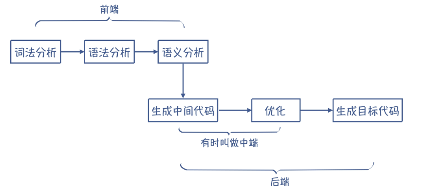
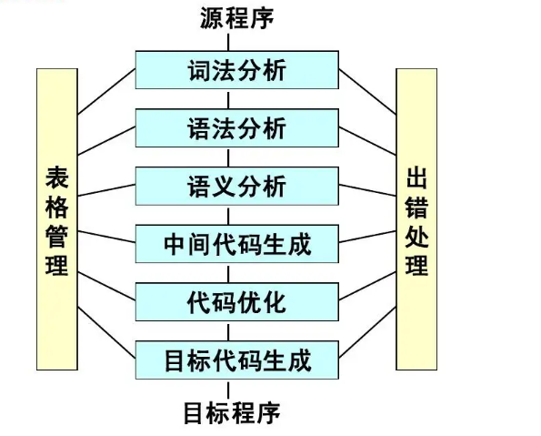
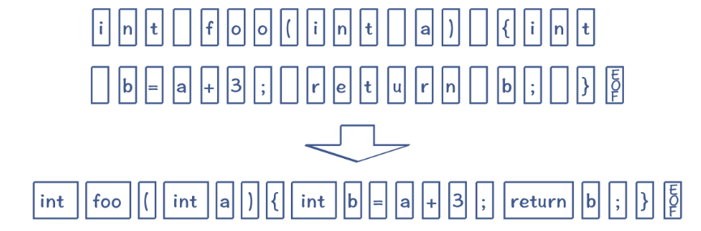
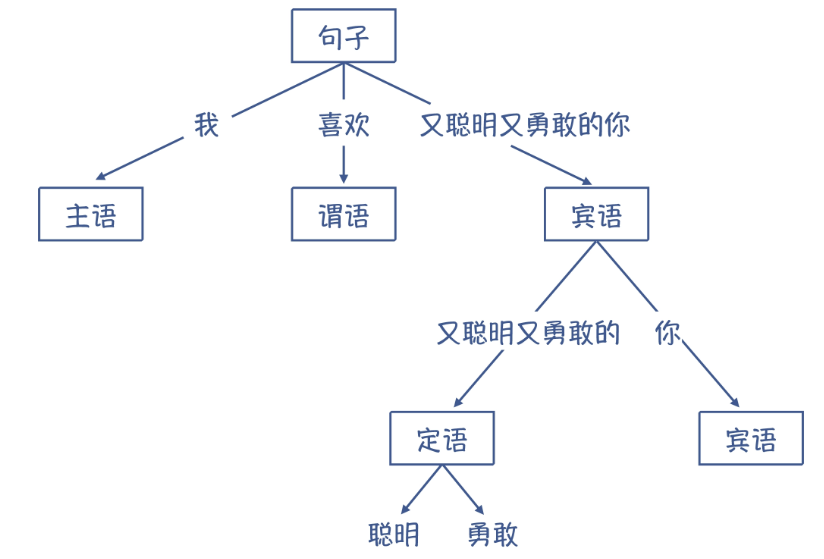
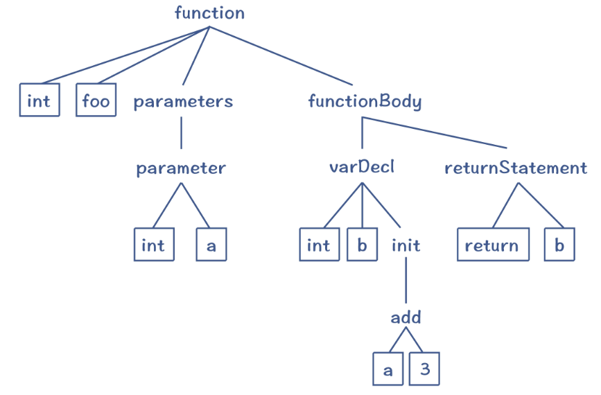

编译原理
编译原理
参考引用:
编译与解释
计算机程序设计语言通常分为机器语言、汇编语言和高级语言三类。高级语言需要翻译成机器语言才能执行，而翻译的方式分为两种，一种是编译，另一种是解释。下面会总结编译和解释的区别。
产物不同:
编译（Compile）:的过程是把整个源程序代码翻译成另外一种代码，翻译后的代码等待被执行或者被优化等等，发生在运行之前,产物是另一份代码(目标代码,如.exe文件,依赖于机器)。运行时并不需要编译器参与,故执行效率较高,速度较快
解释（Interpret）:的过程是把源程序代码一行一行的读懂，然后一行一行的执行，发生在运行时，产物是运行结果。运行时需要解释器参与,故执行效率较低,速度较慢
所以，编译和解释的输入都是源程序代码（有可能是源码，字节码等等），但是输出是不同的。有一张图可以比较形象的解释他们的区别：
编译型语言和解释型语言
语言一般只会定义其抽象语义，而不会强制性要求采用某种实现方式。理论上，任何编程语言都可以是编译型或解释型的。但是，会根据其主流实现方式来把语言分为“编译型语言”和“解释型语言”。
C/C++/C#等都是编译型语言。以C语言为例，源代码被编译之后生成中间文件（.o和.obj），然后用链接器和汇编器生成机器码，也就是一系列基本操作的序列，机器码最后被执行生成最终动作。
Lisp/R/Python等都是解释型语言。
其实许多编程语言同时采用编译器与解释器来实现，这就包括Python，Java等，先将代码编译为字节码，在运行时再进行解释。所谓“解释型语言”并不是不用编译，而只是不需要用户显式去使用编译器得到可执行代码而已 。
**总结:**编译和解释的过程上的区别：编译是将源程序翻译成可执行的目标代码，翻译与执行是分开的；而解释是对源程序的翻译与执行一次性完成，不生成可存储的目标代码。
编译和解释结果上的区别：编译的话会把输入的源程序翻译生成为目标代码，并存下来（无论是存在内存中还是磁盘上），后续执行可以复用；解释的话则是把源程序中的指令逐条解释，不生成也不存下目标代码，后续执行没有多少可复用的信息。
编译的过程
被隐藏的过程
- 预处理（Prepressing）- 展开宏定义（处理
#define，#include），删除注释，添加行号和文件名标识。生成.i 预处理文件 - 编译（Compilation）- 词法分析、语法分析、语义分析、优化。预处理+编译用ccl完成。生成
.s 汇编代码文件 - 汇编（Assembly）- 把汇编代码转成机器可执行的指令，不需要做指令优化。用汇编器as 完成。生成
.o 目标文件(object file) - 链接（Linking）- 用链接器ld完成。


值得注意的是:
在编译器中: “生成n中间代码” 和 “优化” 这个两个过程不是必需的
在解释器中: “优化” 和 “生成目标代码” 这两个过程不是必需的*
词法分析（Lexical Analysis）
将字符串转换为Token的这个过程就叫做词法分析 , 词法分析的主要任务是把源文件的字符流转换成==记号流==
- 源代码进入扫描器，用有限状态机 把源代码的字符分割成
Token。Token一般包括关键字、标识符、字面量、特殊符号。 - 同时，扫描器也会完成其他工作，例如将标识符放到符号表，将数字、字符串常量放到文字表等。
- lex，可以根据用户描述好的词法规则，来进行词法扫描的，词法扫描器。

语法分析（Syntactic Analysis）
语法分析： 需要让编译器想理解自然语言一样，理解它的语法结构, 检查有没有语法错误 如 缺少分号, if - else 不匹配, 括号不匹配, 使用了保留字作为变量名等 ,
语法分析的主要任务是根据语法规则识别出记号流的结构(短语,句子),并构造一棵正确反映结构的==语法树==
比如说：“我喜欢又聪明又勇敢的你”，它的语法结构可以表示成下面这样的树状结构。

在编译器里，语法分析阶段会把Token串，转换成一个体现语法规则的/树状的数据结构，这个数据结构就叫做抽象语法树(AST, Abstract Syntax Tree)

语义分析（Semantic Analysis）
语义分析的重要特点：做上下文相关的分析 。
- 完成静态语义分析（编译时确定的语义是静态的，运行时确定的是动态的，编译器只能完成静态语义分析）。==静态语义分析一般包括声明和类型的匹配、类型转换==等。
- 例如，在语法分析得到的ST中，可能出现两个指针做乘法；在经过语义分析后，判定这是不合法的。
- 动态语义是运行时出现的语义问题，例如将0作为除数。这是不能被编译器检查到的。
- 经过语义分析后，ST的所有节点被标识了类型，对于隐式转换的，会插入相应转换节点。语义分析器还会对符号表中的符号类型也做更新。
中间代码生成（Intermediate Representation）
中间代码IR,是处于源代码和目标代码之间的一种表示形式。
- 中间代码的表现形式有: 后缀式(逆波兰式) , 三元式(三地址码) , 四元式 , 树 等形式
中间代码IR非常接近目标代码，但是==IR与目标机器和运行时环境无关==（目标代码依赖于目标机器,中间代码不依赖）
使用IR有多个原因：
- 是很多解释型的语言，可以直接执行 IR，比如 Python 和 Java。这样的话，编译器生成 IR 以后就完成任务了，没有必要生成最终的汇编代码。
- 在生成代码的时候，需要做大量的优化工作。而很多优化工作没必要基于汇编代码来做，而是可以IR,用统一的算法来完成。
优化（Optimization）
为什么需要优化工作呢？
- 是源语言和目标语言有差异
- 程序员写的代码不是最优的，而编译器会帮忙纠正
采用中间代码来编写优化算法的好处，是可以把大部分的优化算法，写成与具体 CPU 架构无关的形式，从而大大降低编译器适配不同 CPU 的工作量。并且，如果采用像 LLVM 这样的工具，我们还可以让多种语言的前端生成相同的中间代码，这样就可以复用中端和后端的程序了。
生成目标代码
注意: 分配寄存器的工作也在此阶段进行
编译器最后一个阶段的工作，是生成高效率的目标代码，也就是汇编代码。这个阶段，编译器也有几个重要的工作。
第一，是要选择合适的指令，生成性能最高的代码。
第二，是要优化寄存器的分配，让频繁访问的变量（比如循环变量）放到寄存器里，因为访问寄存器要比访问内存快 100 倍左右。
第三，是在不改变运行结果的情况下，对指令做重新排序，从而充分运用 CPU 内部的多个功能部件的并行计算能力。